Your offline games,
synced on your hardware.
Store games as plain directories on your own server. Stream uncompressed builds across LAN and sync every save diff per player automatically.
One cabinet across every machine
Games live on disk as real folders instead of opaque archives. The native Rust and Tauri launcher streams uncompressed files directly to disk and isolates save overlays per player account.
Exits trigger SHA-256 hashing against the clean manifest and upload only modified save chunks. Offline queues flush automatically on reconnect.

Library
LAN ready
valerio
Designed for fast local archives
View sourceDifferential manifests
Downloads merge the shared baseline and your account overlay on the fly without duplicating assets.
Read spec
ELF
PE
Native & GE-Proton
Classifies Linux and Windows binaries automatically and installs SHA-512 verified GE-Proton builds.
Read specParallel 4 MB uploads
Schedules large files first across six workers with client-side SHA-256 verification per chunk.
Read specCrash & quit guard
Detects unclean exits on startup, offers immediate save recovery, and drains syncs before quitting.
Read spec
Desktop Launcher · v0.1.0
For players
Install the native Linux or Windows client and connect to any server on your network.
flatpak install --user OpenSync_Launcher_0.1.0_amd64.flatpak && flatpak run io.opensync.launcher
Self-Hosted Server · Node 22.13+
For hosts
Run the Node, Express, and SQLite archive server on Linux, macOS, or Docker in seconds.
curl -fsSL https://raw.githubusercontent.com/piskevalee-cpu/OpenSync/refs/heads/main/install.sh | bash